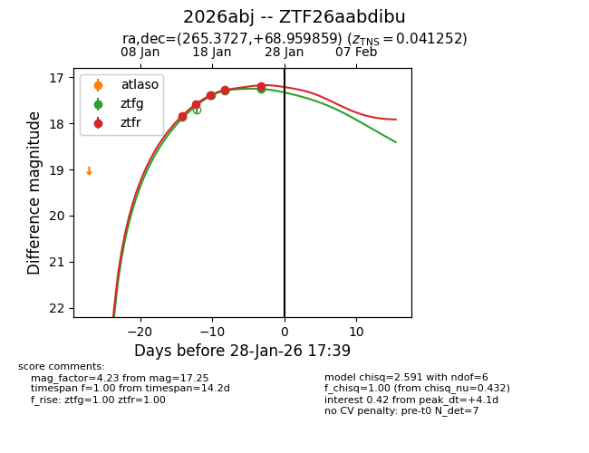
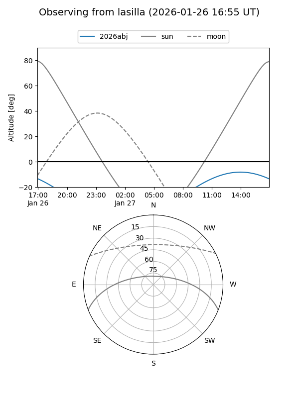
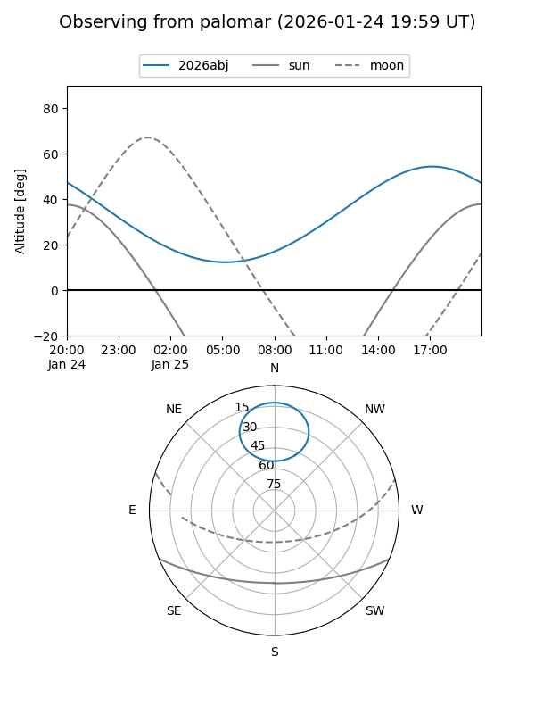
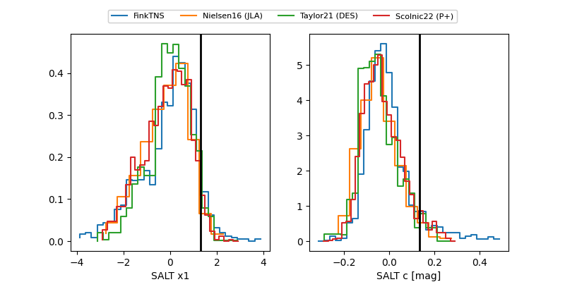

2026abj
Target 2026abj at 2026-01-20 05:51
Aliases and brokers:
FINK: link
Lasair: link
ALeRCE: link
TNS: link
YSE: link
alt names
ZTF26aabdibu (ztf,fink_ztf)
2026abj (tns,yse)
Coordinates:
equatorial (ra, dec) = 265.3727,+68.95986
equatorial (HMS+DMS) = 17:41:29.46,+68:57:35.49
galactic (l, b) = (99.2692,+31.43933)
Flags:
confirmed ia
Photometry:
last ztfg=17.39, ztfr=17.39
2 ztfg, 3 ztfr detections
Lightcurve

Visibility


Additional plots
